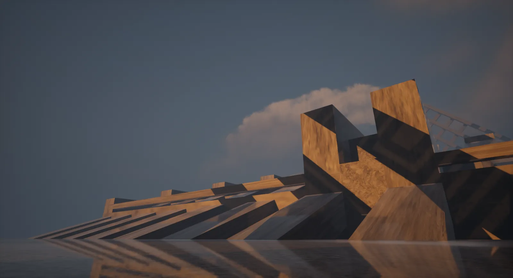
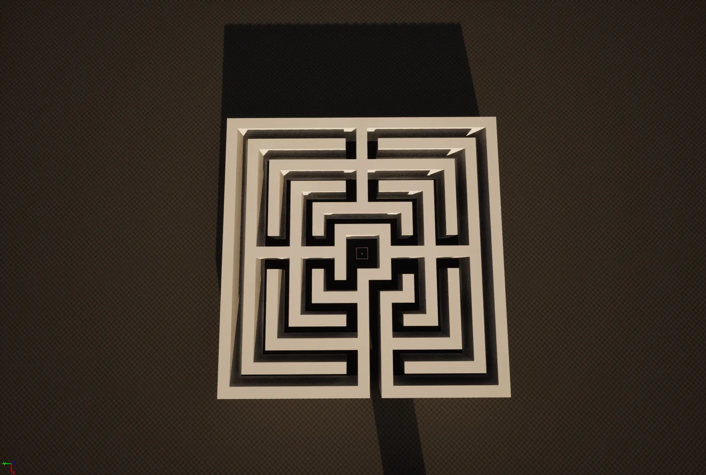
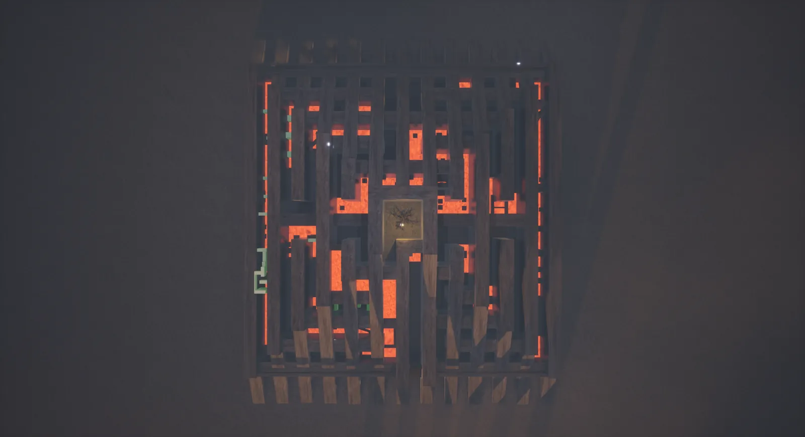
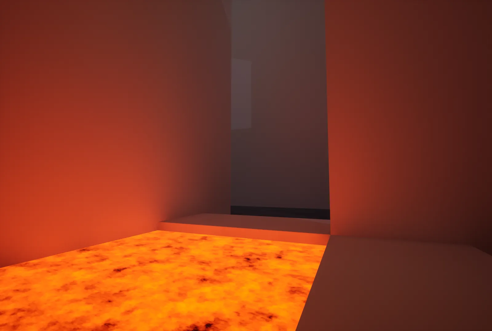
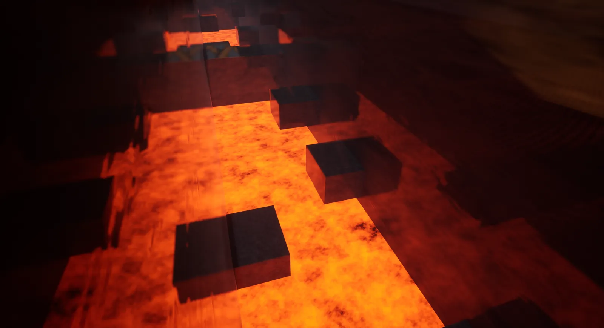
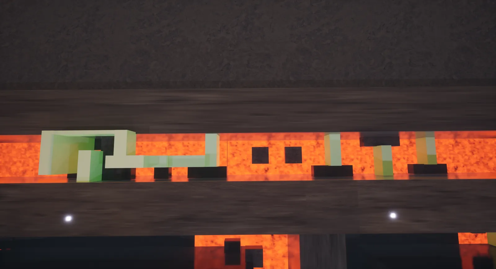
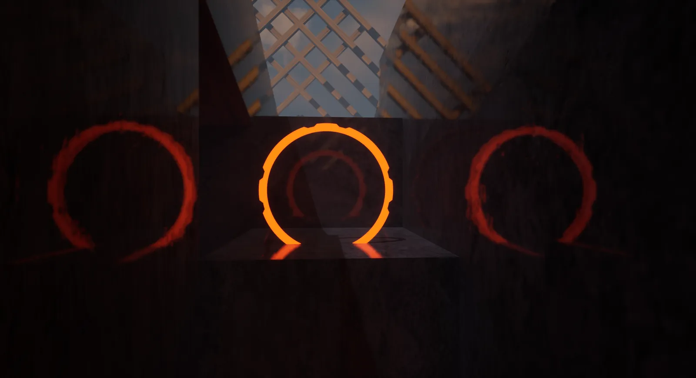

Blaze A Maze
At a Glance
Blaze A Maze is a platformer/maze-runner made for a class challenge. I used it to learn and experiment with level design and Blueprints.
Level Design
I chose a labyrinth design so the player's focus would be on forward movement. Inspired by the fire and darkness of classic platformer boss levels, I created the Temple of Fire and Doom, with pits of lava, magic platforms, and the Tree of Knowledge at its center.

As the player progresses, the level naturally gets harder. The floor is lava, and the player has to jump between floating magic platforms while avoiding the green Cursed Cubes. The Beehive level in Bugdom, with its lakes of honey, and the fiery Bowser levels in Mario inspired me to fill the temple with lava.



Blueprinting
I used this project as a testing ground for Blueprints I later carried into my midterm:
- Stamina system and sprinting
- Health system and environmental damage
- Moving platforms
- Basic HUD
- Checkpoints and respawn
For the lava, I hooked a panner up to a noise texture to create the illusion of movement, with parameters to control the colour and emissive qualities so the lava looks hot.

